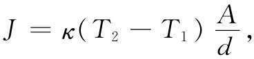

让我们举出用矢量符号描写物理定律的另一个例子。这一定律虽不十分精确，但对于金属和若干种导热的其他物质来说还是很准确的。你知道，如果取一厚片材料，将其一面加热至温度T2 ，而另一面冷却至温度T1 ，那么热量将通过材料从T2 流向T1 ［图2-7（a）］。热流将与板的面积成正比，也与温差成正比，而与板的厚度d成反比（对于给定的温差，板越薄热流就越大）。令J为单位时间通过那块板的热能，我们可以写成
 （2.42）
比例常数κ称为热导率 。
在一较复杂的情况中将会发生什么呢？比方说，在一块奇形怪状的材料中，温度以独特的方式变化。假设我们注意这块材料中的一小部分，并设想有一块在微小尺度上像图2-7（a）那样的薄片。把这薄片旋转至与等温面平行的方向，像在图2-7（b）中的情形，使得式（2.42）对于这一小片是正确的。
图2-7 （a）通过一块板的热流；（b）在一大块材料中平行于等温面的一个无限小薄片
若这一薄片的面积为ΔA，则每单位时间所流过的热量为
式中Δs是该薄片的厚度。我们已在前面把ΔJ/ΔA定义为h的大小，其方向则为热流方向。热流将从T1 +ΔT流向T1 ，所以热流就应当垂直于如图2-7（b）所画出的那些等温面。并且，ΔT/Δs恰好就是T对位置的变化率。又由于位置变化垂直于等温面，所以这个ΔT/Δs便是最大变化率。因此，它恰好就是▽T的大小。现在既然▽T与h反向，所以可将式（2.43）写成一个矢量方程：
h=-κ▽T， （2.44）
负号是必需的，因为热量流向温度“下降”方向。式（2.44）是大块材料中热传导的微分方程。你看到，这是一个真正的矢量方程。如果κ仅仅是一个数，上式两边都是矢量。这是由矩形板的特殊关系［式（2.42）］推广至一任意情况的普遍化过程。我们以后还应该学习把所有像式（2.42）那样的基本物理关系用更为高级的矢量符号写出来。这种符号之所以有用，不仅是由于它会使方程看起来 比较简单，而且它也无需参考任何自主选取的坐标系而最清楚地表明方程的物理内容 。